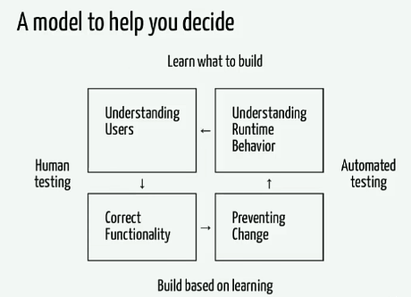

from collections import defaultdict
class WordCount:
def __init__(self):
self._count = defaultdict(int)
def add(self, word: str):
self._count[word.lower()] += 1
def count(self, word: str) -> int:
return self._count[word]
from collections import defaultdict
class WordCount:
def __init__(self):
self._count = defaultdict(int)
def add(self, word: str):
self._count[word.lower()] += 1
def count(self, word: str) -> int:
return self._count[word.lower()]
Podemos probar manualmente
from fixme import WordCount
wc = WordCount()
wc.add("ALL")
wc.add("All")
# Hay un error en este test.
print(wc.count("All") == wc.count("ALL"))
from fixed import WordCount
def test_count_case():
wc = WordCount()
wc.add("ALL")
wc.add("All")
assert wc.count("All") == wc.count("ALL")
pytest test_fixed.py
Si lo ejecutamos contra código erróneo, debe fallar.
from fixme import WordCount
def test_count_case():
wc = WordCount()
wc.add("ALL")
wc.add("All")
assert wc.count("All") == wc.count("ALL")
from fixed import WordCount
def test_count_case():
"""WordCount.count() retorna el conteo correcto para una palabra sin
importar mayúsculas.
"""
wc = WordCount()
wc.add("All")
wc.add("ALL")
assert (wc.count("All"), wc.count("ALL")) == (2, 2)
Desarrollo guiado por pruebas (Test Driven Development)
API pública!
api debe ser tan pequeña como sea posible._count no se prueba, es un detalle interno
de la implementación.bugs serán descubiertos en
producción.

python manage.py runserver).
Implementar una API para una aplicación de tareas (todos)
PythonDjangoDRFREST.pytestpitónico para tests.pytest-djangopytest para funcionar mejor con
django.python -m venv venv
source venv/bin/activate
pip install django
pip install djangorestframework
pip install pytest
pip install pytest-django
django-admin startproject talk
cd talk
django-admin startapp tasks
python manage.py migrate
python manage.py createsuperuser --email admin@example.com --username admin
INSTALLED_APPS = [
...
'rest_framework',
]
REST_FRAMEWORK = {
'DEFAULT_PAGINATION_CLASS': 'rest_framework.pagination.PageNumberPagination',
'PAGE_SIZE': 10
}
# tasks/tests.py
def test_create_task():
"""Authenticated user can create tasks.
A 201 is expected.
"""
POST a una url:
api/v1/tasksapi/v1/tasks/create (no muy RESTful).pytest-django.usuario autenticado.import json
from django.urls import reverse
from rest_framework import status # Constantes
def test_create_task_201_created(client):
"""Authenticated user can create tasks.
A 201 is expected.
"""
response = client.post(
url=reverse("create-task"),
data=json.dumps({"description": "Do this talk slides"}),
content_type="application/json",
)
assert response.status_code == status.HTTP_201_CREATED
[pytest]
DJANGO_SETTINGS_MODULE = talk.test_settings
python_files = tests* test_* __init__.py
addopts = --reuse-db -p no:warnings
import logging
from .settings import * # NOQA
logging.disable(logging.CRITICAL)
DATABASES = {
'default': {
'ENGINE': 'django.db.backends.sqlite3',
'NAME': os.path.join(BASE_DIR, 'db_test.sqlite3'),
}
}
EMAIL_BACKEND = "django.core.mail.backends.locmem.EmailBackend"
DEBUG = False
TEMPLATE_DEBUG = False
PASSWORD_HASHERS = ["django.contrib.auth.hashers.MD5PasswordHasher"]
MIDDLEWARE = [
"django.contrib.sessions.middleware.SessionMiddleware",
"django.middleware.csrf.CsrfViewMiddleware",
"django.contrib.auth.middleware.AuthenticationMiddleware",
"django.contrib.messages.middleware.MessageMiddleware",
]
class DisableMigrations:
def __contains__(self, item):
return True
def __getitem__(self, item):
return None
MIGRATION_MODULES = DisableMigrations()
services.pyselectors.pyapi.py y mezclar paquetes y
selectores.api de esta capa./project/
/config/
/settings//app1/
/models.py/views.py/selectors.py/services.pyserializers.py)/tests/
/views/ (pruebas de vistas)/services/ (pruebas de servicios)/selectors/ (pruebas de selectores)Content-Type). Incluyen los serializers.pytest-mocker
services, los tests de las vistas pueden tener
mocks de los servicios que llaman.Type hinting